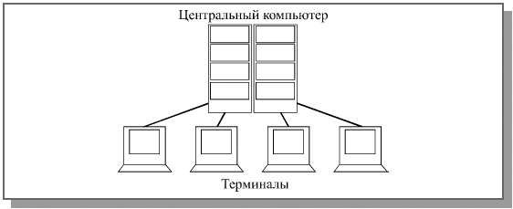
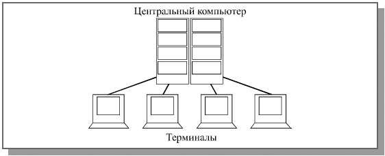

История компьютерных сетей
 Связь на небольшие расстояния в компьютерной технике существовала еще задолго до появления первых персональных компьютеров
 Связь на небольшие расстояния в компьютерной технике существовала еще задолго до появления первых персональных компьютеров